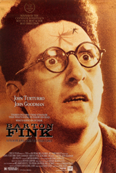
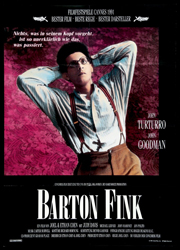
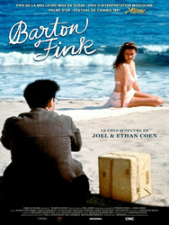
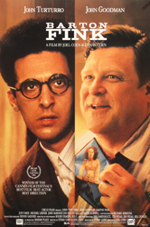
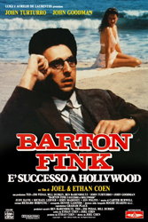

1991 - BARTON FINK |
||||
CAST |
||||
Barton Fink |
- |
John Turturro |
||
Stage Actress |
- |
Frances McDormand (uncredited) |
||
Garland Stanford |
- |
David Warrilow |
||
Derek |
- |
I.M. Hobson | ||
Poppy Carnahan |
- |
Megan Faye | ||
Richard St. Claire |
- |
Lance Davis | ||
Page Calling for Barton Fink |
- |
Barry Sonnenfeld (uncredited) | ||
Chet |
- |
Steve Buscemi |
||
Charlie Meadows |
- |
John Goodman |
||
Jack Lipnick |
- |
Michael Lerner |
||
Lou Breeze |
- |
Jon Polito |
||
W.P. Mayhew |
- |
John Mahoney |
||
Audrey Taylor |
- |
Judy Davis |
||
Ben Geisler |
- |
Tony Shalhoub |
||
Detective Mastrionotti |
- |
Richard Portnow |
||
Detective Deutsch |
- |
Christopher Murney |
||
USO Girl |
- |
Jana Marie Hupp |
||
Chiselled Sailor |
- |
Johnny Judkins |
||
Beach Beauty |
- |
Isabelle Townsend |
||
|
||||
Cinematographer |
- |
Roger Deakins |
||
Production Designer |
- |
Dennis Gassner | ||
Costume Designer |
- |
Richard Hornung | ||
Music |
- |
Carter Burwell | ||
PLOT |
||||
In the wake of his early but undeniable theatrical success in Broadway, the idealistic author of the proletariat and self-pitying 1940s New York playwright, Barton Fink, finds himself lured to dazzling Hollywood to write scripts for eccentric Jack Lipnick's Capitol Pictures. But, instead of writing a story pivoting around the common man, Fink's first screenplay turns out to be a cheesy wrestling movie, and, before he knows it, he develops a severe case of writer's block. Now, holed up in the seedy, run-down Hotel Earle, before his silent Underwood typewriter, Barton comes to realise that his only hope to meet the deadline is to take inspiration from the burly insurance salesman living next door, Charlie Meadows, and the unassuming secretary, Audrey Taylor. In the meantime, the suffocating stranglehold of artistic bankruptcy tightens. Does self-destructive Barton Fink have the stomach for confronting Hollywood's bitter reality? |
||||
BACKGROUND |
||||
The Coens wrote the screenplay for Barton Fink in three weeks while experiencing difficulty during the writing of Miller's Crossing. They began filming the former soon after Miller's Crossing was finished. The film is influenced by works of several earlier directors, particularly Roman Polanski's Repulsion (1965) and The Tenant (1976). As they designed detailed storyboards for Barton Fink, the Coens began looking for a new cinematographer, since their associate Barry Sonnenfeld – who had filmed their first three films – was occupied with his own directorial debut, The Addams Family. The Coens had been impressed with the work of English cinematographer Roger Deakins, particularly the interior scenes of the 1988 film Stormy Monday. After screening other films he had worked on (including Sid and Nancy and Pascali's Island), they sent a script to Deakins and invited him to join the project. His agent advised against working with the Coens, but Deakins met with them at a café in Notting Hill and they soon began working together on Barton Fink. Filming began in June 1990 and took eight weeks, and the estimated final budget for the film was US$9 million.The Coens worked well with Deakins, and they easily translated their ideas for each scene onto film. "There was only one moment we surprised him," Joel Coen recalled later. An extended scene called for a tracking shot out of the bedroom and into a sink drain "plug hole" in the adjacent bathroom as a symbol of sexual intercourse. "The shot was a lot of fun and we had a great time working out how to do it," Joel said. "After that, every time we asked Roger to do something difficult, he would raise an eyebrow and say, 'Don't be having me track down any plug-holes now.'" Three weeks of filming were spent in the Hotel Earle, a set created by art director Dennis Gassner. The film's climax required a huge spreading fire in the hotel's hallway, which the Coens originally planned to add digitally in post-production. When they decided to use real flames, however, the crew built a large alternative set in an abandoned aircraft hangar at Long Beach. A series of gas jets were installed behind the hallway, and the wallpaper was perforated for easy penetration. As Goodman ran through the hallway, a man on an overhead catwalk opened each jet, giving the impression of a fire racing ahead of Charlie. Each take required a rebuild of the apparatus, and a second hallway stood ready nearby for filming pick-up shots between takes. The final scene was shot near Zuma Beach, as was the image of a wave crashing against a rock. |
||||
     |
||||